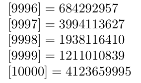

2023年12月11日
LaTeXでメルセンヌ・ツイスタ
これは「TeX ＆ LaTeX Advent Calendar 2023」の11日目の記事です。
（10日目は hid_alma1026 さん、12日目は zr_tex8r さんです。）
この記事ではexpl3でメルセンヌ・ツイスタを実装してみます。
はじめに
皆さんもLaTeX文章を書いていたら乱数を使いたくなる、ということはよくあることでしょう。以下のWebページではTeXで乱数を使ういろいろな方法が紹介されています。
この中でもとくに、高品質な疑似乱数生成アルゴリズムであるメルセンヌ・ツイスタを使いたいと思う人が多いのではないでしょうか。しかし、メルセンヌ・ツイスタを使いたいけど諸般の事情でLuaTeXが使えず、諦めざるを得ないという人ももしかしたらいるかもしれません。
というわけで、expl3でメルセンヌ・ツイスタ（“MT19937”とか呼ばれてるやつ）を実装してみることにします。
（かなり強引な導入）
expl3でメルセンヌ・ツイスタを実装してみる
いきなりですが、MT19937の実装には以下の機能が必要になります。
- 符号無し32ビット整数
- ビット単位論理和・論理積・排他的論理和演算
- ビットシフト演算
これらはいずれもTeXにはありません。
なので作りました。
GitでCloneまたはZIPをダウンロードしてl3build install --fullで$TEXMFHOMEにインストールできます。
これさえあればあとはメルセンヌ・ツイスタのアルゴリズムにしたがって実装するだけです。
出来上がったコードは
に置いておきます。
まずはMT19937のパラメータ定数を定義します。
% constant n, m
\int_const:Nn \c_mt_n_int { 624 }
\int_const:Nn \c_mt_m_int { 397 }
% constant a
\biguint_const:Nn \c_mt_a_biguint { "9908 B0DF }
% constant u, d
\biguint_const:Nn \c_mt_u_biguint { 11 }
\biguint_const:Nn \c_mt_d_biguint { "FFFF FFFF }
% constant s, b
\biguint_const:Nn \c_mt_s_biguint { 7 }
\biguint_const:Nn \c_mt_b_biguint { "9D2C 5680 }
% constant t, c
\biguint_const:Nn \c_mt_t_biguint { 15 }
\biguint_const:Nn \c_mt_c_biguint { "EFC6 0000 }
% constant l
\biguint_const:Nn \c_mt_l_biguint { 18 }
% constant f
\biguint_const:Nn \c_mt_f_biguint { 1812433253 }
つぎに変数を定義します。
% state MT[0..(n-1)]
\int_step_inline:nnn { 0 } { \c_mt_n_int - 1 }
{ \biguint_new:c { g_mt_MT[ #1 ]_biguint } }
% index
\int_new:N \g_mt_index_int
\int_gset:Nn \g_mt_index_int { \c_mt_n_int + 1}
それから生成した乱数を返すための変数です。
\biguint_new:N \g_mt_result_biguint
そのほか実装で使用する定数です。
\biguint_const:Nn \c_mt_lower_mask_biguint { "7FFF FFFF }
\biguint_const:Nn \c_mt_upper_mask_biguint { "8000 0000 }
\biguint_const:Nn \c_mt_wbits_mask_biguint { "FFFF FFFF }
\biguint_const:Ne \c_mt_w_minus_two_biguint { \int_eval:n { 32 - 2 } }
使用する一時変数です。
\biguint_new:N \l__mt_tempa_biguint \biguint_new:N \l__mt_tempb_biguint \biguint_new:N \l__mt_y_biguint \biguint_new:N \l__mt_x_biguint \biguint_new:N \l__mt_xA_biguint
使用する関数の変種を生成しておきます。
\cs_generate_variant:Nn \biguint_shr:NNN { NcN }
\cs_generate_variant:Nn \biguint_bitand:NNN { NcN }
\cs_generate_variant:Nn \biguint_gbitand:NNN { cNN }
\cs_generate_variant:Nn \biguint_bitxor:NNN { NcN }
\cs_generate_variant:Nn \biguint_gbitxor:NNN { ccN }
エラーメッセージを定義します。
\msg_new:nnn { mt } { never-seeded }
{ Generator~was~never~seeded. }
シードを設定するための\mt_seed_mt:n関数を定義します。
expl3の\int_step_inline:nnnを使ってループしていますが、関数定義内なので#を二重にするのを忘れずに。biguintは今のところbiguint型の変数・定数の演算しかサポートしていないので、演算に使う値は予め定数としてよういしておくか、一時変数にセットする必要があります。
\cs_new_protected:Npn \mt_seed_mt:n #1
{
\int_gset_eq:NN \g_mt_index_int \c_mt_n_int
\biguint_gset:cn { g_mt_MT[ 0 ]_biguint } { #1 }
\int_step_inline:nnn { 1 } { \c_mt_n_int - 1 }
{
% MT[i-1] >> (w - 2)
\biguint_shr:NcN
\l__mt_tempa_biguint
{ g_mt_MT[ \int_eval:n { ##1 - 1 } ]_biguint }
\c_mt_w_minus_two_biguint
% MT[i-1] xor (...)
\biguint_bitxor:NcN
\l__mt_tempa_biguint
{ g_mt_MT[ \int_eval:n { ##1 - 1 } ]_biguint }
\l__mt_tempa_biguint
% f * (...)
\biguint_mul:NNN
\l__mt_tempa_biguint
\c_mt_f_biguint
\l__mt_tempa_biguint
% ... + i
\biguint_set:Nn \l__mt_tempb_biguint { ##1 }
\biguint_add:NNN
\l__mt_tempa_biguint
\l__mt_tempa_biguint
\l__mt_tempb_biguint
% MT[i] := lowest w bits of ...
\biguint_gbitand:cNN
{ g_mt_MT[ ##1 ]_biguint }
\l__mt_tempa_biguint
\c_mt_wbits_mask_biguint
}
}
乱数を生成する関数を定義します。結果はグローバル変数\g_mt_result_biguintにセットされます。
% if index >= nの所で>=ではなく<にしてFALSE節を使っています。\int_compare:nNn(TF)では>=が使えません、\int_compare:nTを使えば>=を使えますが少し遅くなります。
c変種で名前を作るときにint型の変数を使っています。int型の変数は展開可能ではないので\int_use:Nなどを忘れないようにしましょう。
\cs_new_protected:Npn \mt_extract_number:
{
% if index >= n
\int_compare:nNnF { \g_mt_index_int } < { \c_mt_n_int }
{
\int_compare:nNnT { \g_mt_index_int } > { \c_mt_n_int }
{
\msg_error:nn { mt } { never-seeded }
}
\mt_twist:
}
% y := MT[index]
\biguint_set_eq:Nc
\l__mt_y_biguint
{ g_mt_MT[ \int_use:N \g_mt_index_int ]_biguint }
% y := y xor ((y >> u) and d)
\biguint_shr:NNN
\l__mt_tempa_biguint \l__mt_y_biguint \c_mt_u_biguint
\biguint_bitand:NNN
\l__mt_tempa_biguint \l__mt_tempa_biguint \c_mt_d_biguint
\biguint_bitxor:NN
\l__mt_y_biguint \l__mt_tempa_biguint
% y := y xor ((y << s) and b)
\biguint_shl:NNN
\l__mt_tempa_biguint \l__mt_y_biguint \c_mt_s_biguint
\biguint_bitand:NNN
\l__mt_tempa_biguint \l__mt_tempa_biguint \c_mt_b_biguint
\biguint_bitxor:NN
\l__mt_y_biguint \l__mt_tempa_biguint
% y := y xor ((y << t) and c)
\biguint_shl:NNN
\l__mt_tempa_biguint \l__mt_y_biguint \c_mt_t_biguint
\biguint_bitand:NNN
\l__mt_tempa_biguint \l__mt_tempa_biguint \c_mt_c_biguint
\biguint_bitxor:NN
\l__mt_y_biguint \l__mt_tempa_biguint
% y := y xor (y >> l)
\biguint_shr:NNN
\l__mt_tempa_biguint \l__mt_y_biguint \c_mt_l_biguint
\biguint_bitxor:NN
\l__mt_y_biguint \l__mt_tempa_biguint
% index := index + 1
\int_gincr:N \g_mt_index_int
% return
\biguint_gset_eq:NN
\g_mt_result_biguint \l__mt_y_biguint
}
メルセンヌ・ツイスタの名前の由来でもある？内部状態を「ツイスト」する関数を定義します。
% if (x mod 2) != 0の所はつまりは奇数かどうかの判定なので普通に\biguint_if_odd:NTを使っています。
\cs_new_protected:Npn \mt_twist:
{
\int_step_inline:nnn { 0 } { \c_mt_n_int - 1 }
{
% MT[i] and upper_mask
\biguint_bitand:NcN
\l__mt_x_biguint
{ g_mt_MT[ ##1 ]_biguint }
\c_mt_upper_mask_biguint
% MT[(i+1) mod n] and lower_mask
\biguint_bitand:NcN
\l__mt_tempa_biguint
{ g_mt_MT[ \int_eval:n { \int_mod:nn { ##1 + 1 } { \c_mt_n_int } } ]_biguint }
\c_mt_lower_mask_biguint
% x := ... | ...
\biguint_bitor:NN \l__mt_x_biguint \l__mt_tempa_biguint
% xA := x >> 1
\biguint_shr:NNN \l__mt_xA_biguint \l__mt_x_biguint \c_one_biguint
% if (x mod 2) != 0
\biguint_if_odd:NT \l__mt_x_biguint
{
% xA := xA xor a
\biguint_bitxor:NN \l__mt_xA_biguint \c_mt_a_biguint
}
% MT[i] := MT[(i + m) mod n] xor xA
\biguint_gbitxor:ccN
{ g_mt_MT[ ##1 ]_biguint }
{ g_mt_MT[ \int_eval:n { \int_mod:nn { ##1 + \c_mt_m_int } { \c_mt_n_int } } ]_biguint }
\l__mt_xA_biguint
}
% index := 0
\int_gzero:N \g_mt_index_int
}
デバッグ用に内部状態を出力する関数も用意しておきます。
\cs_new_protected:Npn \mt_show:
{ \mt__dump:N \tl_show:N }
\cs_new_protected:Npn \mt_log:
{ \mt__dump:N \tl_log:N }
\tl_new:N \l__mt_dump_tl
\cs_new_protected:Npn \mt__dump:N #1
{
\tl_clear:N \l__mt_dump_tl
\int_step_inline:nnn { 0 } { \c_mt_n_int - 1 }
{
\tl_put_right:Ne \l__mt_dump_tl
{ \biguint_to_decimal:c { g_mt_MT[ ##1 ]_biguint } ~ }
}
\tl_put_right:Ne \l__mt_dump_tl
{ \int_use:N \g_mt_index_int }
#1 \l__mt_dump_tl
}
LaTeXから使うための命令を定義しておきます。
\MTseed{〈シード〉}：シードを設定する。〈シード〉は十進表記または"前置の十六進表記\MTrand：乱数を生成する。生成乱数は\MTnumberを通して取得する。\MTnumber：\MTrandで生成した乱数の十進表記に展開される。（0 ～ 232 − 1）
% LaTeX2e interface
\NewDocumentCommand \MTseed { m }
{ \mt_seed_mt:n {#1} }
\NewDocumentCommand \MTrand {}
{ \mt_extract_number: }
\NewExpandableDocumentCommand \MTnumber {}
{ \biguint_to_decimal:N \g_mt_result_biguint }
によると、デフォルトのシード5489のときに10000個目の乱数が4123659995になるみたいなので確かめてみます。
\documentclass[a4paper,twocolumn]{article}
\ExplSyntaxOn
% さっきのコード
\ExplSyntaxOff
\usepackage{pgffor}
\begin{document}
\MTseed{5489}
\foreach \x in {1,...,10000}
{%
\MTrand
$ [\x] = \MTnumber $%
\par
}%
\end{document}
実行してみるとちゃんと10000個目の乱数が4123659995になっているのが確認できます。

おわりに
LuaTeX以外でもメルセンヌ・ツイスタできて幸せ！
LuaTeXなら簡単にメルセンヌ・ツイスタできてもっと幸せ！
あとがき
さらっと登場したbiguintパッケージですが、もともと別のネタ用に作っていたものだったのですが、そっちのネタが出来そうにもなくお蔵入りになるはずだったやつです。せっかく作ったのにもったいなかったので簡単に実装できそうなメルセンヌ・ツイスタにしてみました。
皆さんもネタ作りは計画的に！